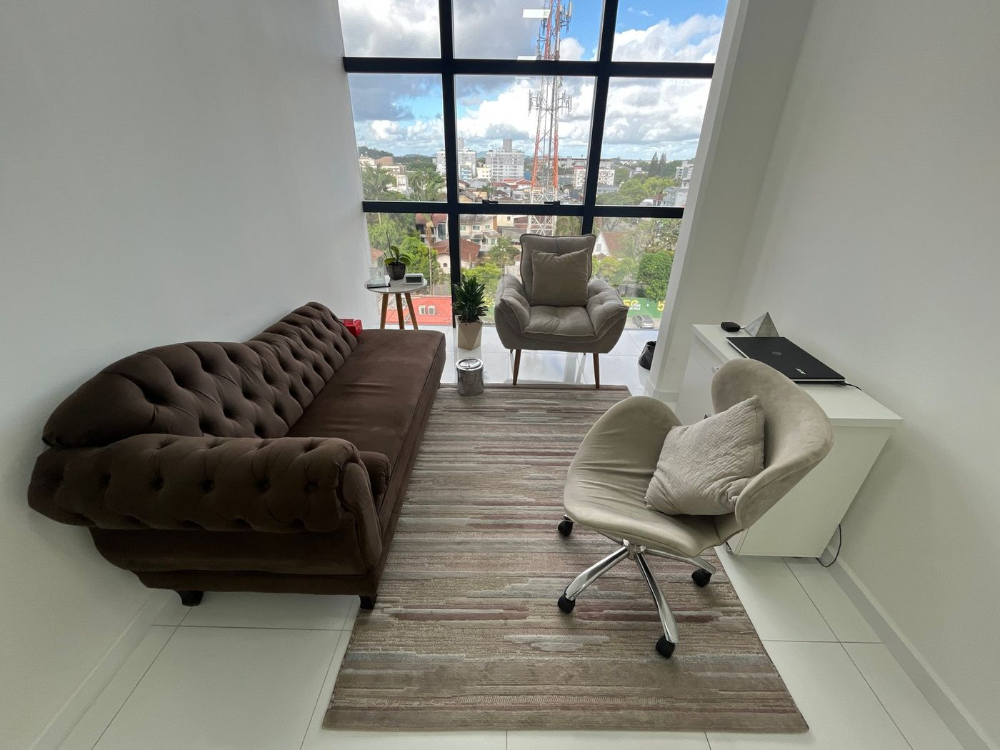

EMDR
Ajuda o cérebro a reprocessar memórias difíceis, para que deixem de ter o mesmo peso no presente. Prática avaliada pelo Conselho Federal de Psicologia como compatível com a profissão.
Psicoterapia para adultos e adolescentes, com foco em trauma, ansiedade e fobias. Uma escuta atenta, com ciência e calma, há 31 anos. Presencial em Joinville e online.

Para adultos e adolescentes que convivem com traumas, ansiedade, fobias, depressão ou bloqueios.
Saiba maisIndividual, para mulheres de alta performance que querem levar esse cuidado também para a vida pessoal.
Saiba maisSaúde emocional, liderança e prevenção do esgotamento para equipes e empresas.
Saiba maisLivros infantis e o material de coerência cardíaca para cuidar das emoções em casa.
Saiba mais
Marínea Maria Fediuk é psicóloga há 31 anos e mestre em Psicologia pela UFSC. Une a ciência do trauma, com EMDR, Brainspotting e Somatic Experiencing, a práticas de regulação do sistema nervoso, como a coerência cardíaca. Também atua com empresas na adequação à NR-1.
Também é autora de livros infantis e palestrante. Seu trabalho parte de uma ideia simples: o que sentimos não está separado do corpo.
“Não existe corpo e mente. Nós somos um corpo onde tudo acontece.”Ler a história completa
Cada processo respeita o tempo de quem chega, com métodos voltados ao cuidado do trauma.
Situações difíceis que continuam presentes, como abusos, perdas e crises.
Preocupação constante, crises e sintomas que aparecem no corpo.
Medos intensos que limitam escolhas e a rotina.
Tristeza, cansaço e perda de sentido que se prolongam.
Travas emocionais que impedem decisões, relações e projetos.
Uma mensagem. Você chama no WhatsApp e combina o melhor horário.
A primeira sessão. Um encontro para entender o que você está vivendo.
O acompanhamento. Um caminho construído junto, no seu ritmo.
“Uma vez meu paciente, sempre meu paciente.”
Quem já passou pelo consultório tem prioridade para voltar, mesmo depois de muitos anos. Agendar pelo WhatsAppEm vídeos curtos, a Marínea explica como cada método funciona.
Ajuda o cérebro a reprocessar memórias difíceis, para que deixem de ter o mesmo peso no presente. Prática avaliada pelo Conselho Federal de Psicologia como compatível com a profissão.
Parte da ideia de que onde olhamos afeta o que sentimos, e usa pontos do campo visual para acessar e acolher emoções.
Para a mulher que já conquistou o mundo lá fora, mas ainda não encontrou a paz dentro de si.
Mentoria individual para executivas, empresárias, médicas, advogadas e juízas que desejam transformar sucesso externo em plenitude interna.
Palestras e consultoria para organizações que querem cuidar das pessoas e se adequar à NR-1 com um olhar humano.
Levar para minha empresa
Livro infantil digital
Amizade, coragem e o jeito de uma criança olhar para as diferenças.
Ver na loja
Livro infantil digital
Memórias de família contadas pelo olhar encantado de uma neta.
Ver na lojaE-book e curso
Respiração, ritmo do coração e emoções em equilíbrio, com exercícios para o dia a dia.
Quero saber quando sair“Suas sessões são um lugar de acolhimento e apoio! A técnica EMDR me ajudou imensamente a me entender, regular minhas emoções e lidar com traumas.”
“Excelente profissional, muito acolhedora e atenciosa.”
“Com uma visão ampla e sem preconceitos, em cada sessão me ensinava técnicas e trazia conteúdos para além da terapia.”
Trechos de avaliações espontâneas publicadas no Google. O uso de depoimentos será revisto com a Marínea à luz das orientações do Conselho. Ver todas no Google
O agendamento é feito pelo WhatsApp, de forma simples e reservada.
Conversar pelo WhatsApp